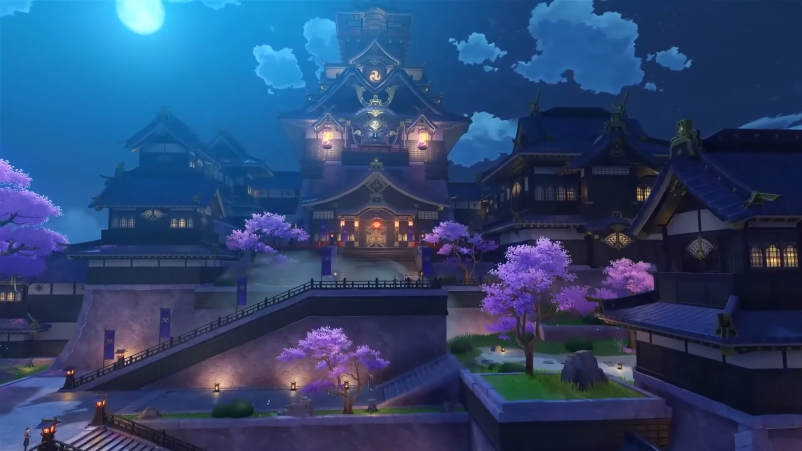

Début du jeu
Ce jeu commence avec une cinématique qui présente le personnage principalLe joueur a le choix entre choisir le personnage masculin ou le personnage féminin. Ces deux personnages sont frères et soeurs et ont l'habitude de voyager entre les mondes.
Malheureusement une déesse capture un des jumeaux pendant que l'autre s'evanouit. Notre personnage se reveille alors dans un endroit inconnu avec une petite personne ailée appelée "Paimon".
On est alors libre d'explorer la map et de commencer le jeu.
Histoire principale
On suit l'histoire du personnage principal qui cherche à retrouver son frère/soeur.Pour çela on voyage à travers le monde nommé Teyvat et ses différentes citées. On va alors rencontrer de nombreux personnages différents et résoudre diverses intrigues.
Les différentes citées
Mondstadt
Mondstadt est la première ville que vous allez découvrir dans le jeu. C'est une ville fortifié dirigé par l'Ordre de Favonius.Cette cité est sous la protection de l'archon anémo et est connu comme la cité du vent et de la liberté.

Liyue
Liyue es la deuxième ville qui nous est donnée de découvrir. C'est une ville beaucoup plus grande que Mondstadt qui est dirigé par l'archon Géo : Morax.Cette citée considère les contrats et le commerce comme les choses les plus importantes et les font passer avant tout.

Inazuma
Inazuma est la derniere citée que l'on peut visiter à l'heure actuelle. C'est une citée constituée de nombreuses îles.Inazuma a un climat politique très instable et oppressif autour des oeils divins (objets donnés par les dieux et permettants d'obtenir des pouvoirs elementaires.
Une résistance s'organise contre l'archon electro qui dirige cette citée et notre personnage en fera parti. Le but recherché par l'archon electro est l'eternité.

Personnages et gameplay
Genshin Impact est un open world où le but est d'explorer et level-up afin de faire les différentes quêtes et d'avancer l'histoire.Pour cela on controle une équipe de quatres personnages qui auront chacun un élement et une armes différentes.
Les différentes classe de personnages
Les personnages anémo

Leurs pouvoirs permettent de faire la réaction dispersion qui inflige des dégats aux ennemis quand ils son déjà afféctés par un élément.